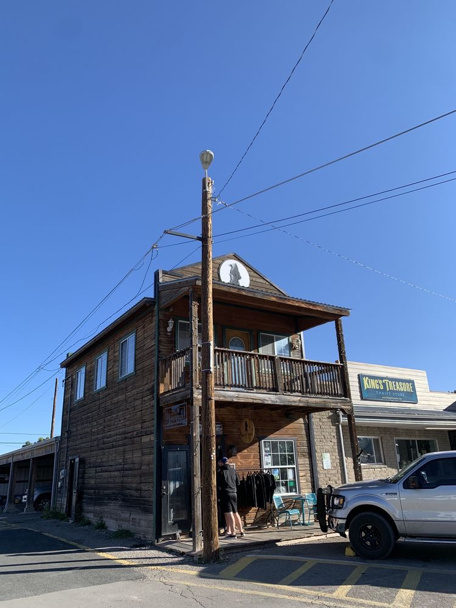
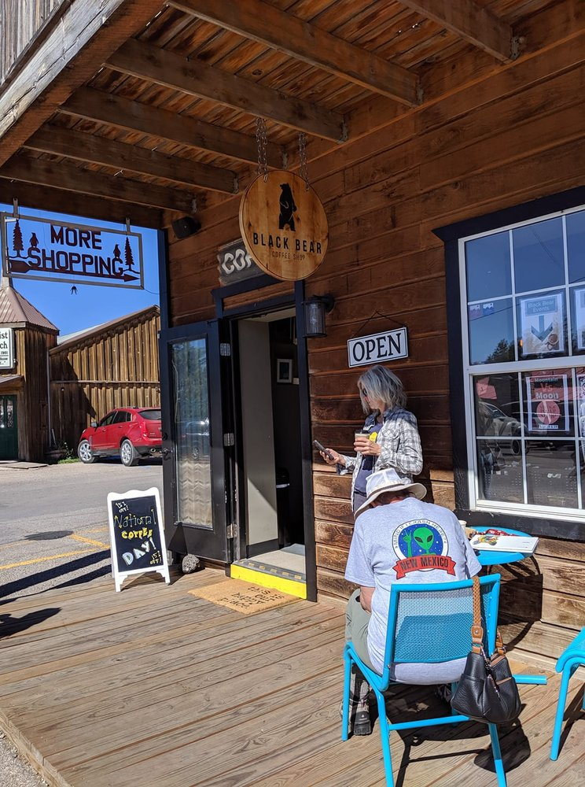
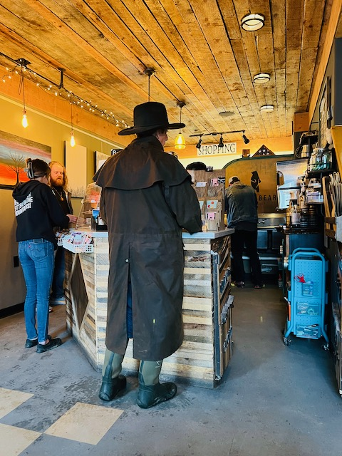
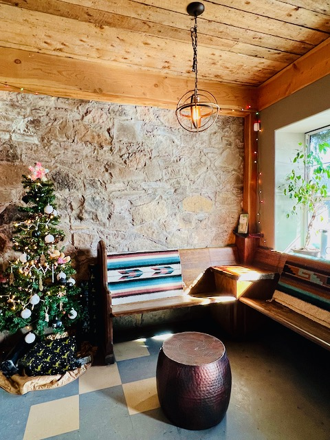

More Than a Coffee Stop
Black Bear Coffee Shop is one of Cloudcroft’s more established coffee anchors, sitting right on Burro Avenue at the center of the village. It’s a specialty coffee shop with a real beverage program — not just drip coffee — plus roasted beans, seasonal drinks, and gluten-free, dairy-free, and sugar-free options.
Owners Crystal and Nathan Tompkins have built the shop into more than a caffeine stop. Monthly featured artists rotate through a petite gallery space inside, and Crystal’s own photography is displayed in the shop. The result is a place that functions as both coffee shop and small cultural stop on Burro Avenue.
This is one of the better places in Cloudcroft to slow down rather than just refuel. Come for the coffee, stay for the art, take home a bag of beans.

Coffee & Art



Monthly Artists
Crystal and Nathan Tompkins host rotating monthly artists in the shop’s petite gallery space. It’s a small cultural stop on Burro Avenue that connects visitors with local creative work.
Crystal’s Photography
Co-owner Crystal Tompkins is a photographer whose work is displayed in the shop. She was the October featured artist in their own gallery space.
Burro Avenue Hub
More than a coffee counter. Black Bear functions as part of the current downtown business culture — a place where coffee, art, and community overlap.
Visit Black Bear
Everything you need to know before you go.
Location
200 Burro Ave, Cloudcroft, NM 88317. Right on the main street — walkable from anywhere in the village.
Hours
Hours vary by season and may change. Check their Facebook or Instagram for current hours before visiting.
Contact
Phone: 575-682-1239
Web: mybbcoffee.com
Good to Know
Small-town hours can vary, especially off-season. This is a coffee shop, not a full breakfast café. Counter service. Exact seating and patio details not confirmed — it’s a cozy shop.
Coffee, Art, and Burro Avenue
Black Bear Coffee Shop is where specialty coffee meets local art on Cloudcroft’s main street. Seasonal drinks, dietary options, roasted beans to take home, and a rotating gallery inside.